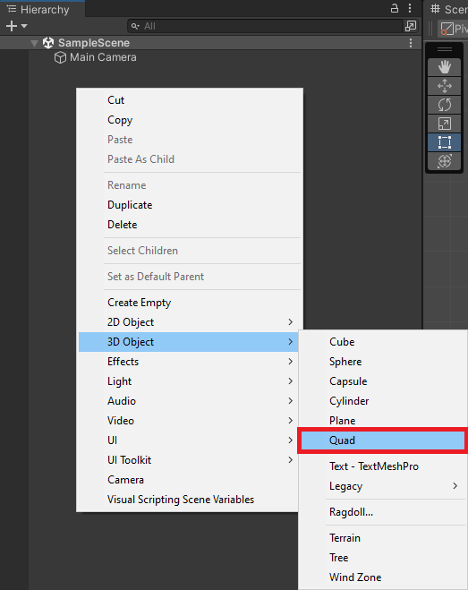

Using Fastai and TensorFlow.js for Hand Gesture Recognition in Unity Pt. 2
- Overview
- Set Up Unity Hub
- Install Unity Editor
- Create New Project
- Import Assets
- Create JavaScript Utility File
- Create jslib Plugin
- Import Plugin Functions
- Create Image Classifier Script
- Set up Unity Scene
- Test in Browser
- Summary
Tutorial Links
- Part 1: Train a hand gesture classifier using fastai and export it to TensorFlow.js.
- Part 2: Create a TensorFlow.js plugin for the Unity game engine.
- Part 3: Build a Unity project as a WebGL application and host it using GitHub Pages.
- GitHub Repository
Overview
In Part 2 of this tutorial series, we first install Unity Hub, download a Unity Editor, and create a new Unity project. Next, we will import any required assets and add a JavaScript utility file and jslib plugin. We will then create an image classifier script to use our trained model in Unity and set up the Unity scene to use it. Finally, we will test our project in a browser. By the end of this post, you will have a working TensorFlow.js plugin for Unity that you can use to recognize hand gestures in your projects.
Set Up Unity Hub
Before creating a project, we must install Unity Hub, create a UnityID account, and activate a (free) Unity license. The beginner Unity tutorial at the link below covers all these steps and how to create a simple flappy bird-style game.
The link opens to the part covering how to install Unity for the first time, but I recommend watching the entire tutorial for those new to Unity.
Install Unity Editor
After installing Unity Hub and activating a license, we must add a version of the Unity Editor. We will use the latest 2022.1+ release. The tutorial uses 2022.1.19, which you can install directly from the link below.
- Unity download archive: Unity 2022.1.19
Open Unity Hub and select the Installs section in the side panel. Then click the Install Editor button in the upper right-hand corner.

Click the Install button next to the latest 2022.1 version under Other Versions.

Scroll down the Add modules selection menu and click the check box next to WebGL Build Support. Click the Install button after selecting all desired modules.
Unity Hub will begin downloading and installing the selected editor version.
Create New Project
Go back to the Projects section after the editor finishes installing and click New Project.
Select the target editor version from the Editor Version dropdown menu.
Select the 2D Core template.
Pick a name for the project and a location for the project folder.

Finally, click Create Project in the lower right-hand corner.

The Unity Editor may take a few minutes to open the new project.
Import Assets
Inside the editor window, we will first import any class labels, test images, and TensorFlow.js models into the Assets folder.
Import class labels
Right-click a space in the Assets section and select Create → Folder from the popup menu.
Name the new folder ClassLabels.
Drag and drop any JSON class label files from the operating system’s file explorer into the ClassLabels folder. Sample files are available in the Google Drive link below.
- Google Drive: ClassLabels
Import sample images
Next, create an Images folder and drop any test images into it. Sample files are available in the Google Drive link below.
Google Drive: Images
Unity automatically imports images as a Sprite (2D and UI) texture type. We don’t need to change it for our purposes.
Import TFJS models
We need to place the TensorFlow.js models in a StreamingAssets folder to include them in the final application. Create a new folder named StreamingAssets. Let’s put the folders for each model in a new subfolder called TFJSModels to keep things organized.
- Google Drive: TFJSModels
Inside each subfolder are the JSON and BIN files for a TensorFlow.js model.

Create JavaScript Utility File
Before creating the jslib plugin, we’ll add a JavaScript file with a utility function to the StreamingAssets folder. Open the StreamingAssets folder in a code editor and create a new JavaScript file called utils.js.

Define function to perform inference asynchronously
This function will take in the model, input data, and shape for the input tensor as input.
We can use the tf. tidy() method included with TensorFlow.js for automatic memory cleanup. TensorFlow.js also provides a built-in ArgMax to extract the predicted class index.
// Perform inference with the provided model and input data
async function PerformInferenceAsync(model, float32Data, shape) {
const outputData = tf.tidy(() => {
// Initialize the input tensor
const input_tensor = tf.tensor(float32Data, shape, 'float32');
// Make a prediction.
return model.predict(input_tensor);
});
// Pass raw output through a SoftMax function
let results = await outputData.data();
// Extract the predicted class from the model output
let index = await tf.argMax(results).data();
return [index, results[index]];
}Create jslib Plugin
Now we can create the jslib plugin to use the TensorFlow.js models. In the Assets section, create a new folder called Plugins. Then create a subfolder called WebGL.

Open the WebGL folder in a code editor and create a new file called WebGLPlugin.jslib. For formatting purposes, we can set the jslib file as JavaScript.

Basic plugin format
Here is the basic format for the jslib plugin. We’ll place any functions we want accessible from Unity inside the plugin variable.
// Define plugin functions
let plugin = {
}
// Add plugin functions
mergeInto(LibraryManager.library, plugin);Define function to add external JavaScript dependencies
We first need to add the script tag for the TensorFlow.js npm package and the utils.js script in the StreamingAssets folder.
// Add additional JavaScript dependencies to the html page
GetExternalJS: function () {
// Add base TensorFlow.js dependencies
let tfjs_script = document.createElement("script");
tfjs_script.src = "https://cdn.jsdelivr.net/npm/@tensorflow/tfjs@3.20.0/dist/tf.min.js";
document.head.appendChild(tfjs_script);
// Add custom utility functions
let script = document.createElement("script");
script.src = "./StreamingAssets/utils.js";
document.head.appendChild(script);
},Define function to set the TensorFlow.js compute backend
Next, we’ll add a function to update the compute backend. At the time of writing, I only recommend using the WebGL backend. The base CPU backend is not suitable for real-time applications. The WASM backend enables multi-threaded CPU inference but does not have full operator support. Lastly, the WebGPU backend is not yet officially supported by browsers.
// Set the TFJS inference backend
SetTFJSBackend: function (backend) {
let backend_str = UTF8ToString(backend);
try {
tf.setBackend(backend_str).then(() => { });
console.log(`Successfully set ${backend_str} backend.`);
} catch (error) {
console.log("Error occurred. Falling back to WebGL backend.");
tf.setBackend('webgl');
}
},Define function to Initialize a TensorFlow.js model
We’ll pass a file path for a model.json file and an array to store the predicted class index and the corresponding confidence score. We’ll be able to access the updated array values in Unity.
// Load a TFJS model
InitTFJSModel: async function (model_path, output_data) {
// Convert bytes to the text
let model_path_str = UTF8ToString(model_path);
// Load the TensorFlow.js model at the provided file path
this.model = await tf.loadGraphModel(model_path_str, { fromTFHub: false });
// Check the model input shape
const input_shape = this.model.inputs[0].shape;
console.log(`Input Shape: ${input_shape}`);
// Initialize an array to store the predicted class index and confidence score
this.prediction = new Float32Array(buffer, output_data, 2);
},Define function to perform inference with a input image
Loading the model can take several seconds, depending on the user’s internet connection. We don’t want to perform inference until after it initializes.
Due to the way Unity reads texture data from the GPU to the CPU, we need to read the image data from the bottom up to make the image correctly oriented.
After populating the input array, we’ll wait for the asynchronous inference function to finish before updating the prediction array.
// Perform inference with the provided image data
PerformInference: function (image_data, size, width, height) {
// Only perform inference after loading a model
if (typeof this.model == 'undefined') {
console.log("Model not defined yet");
return false;
}
// Initialize an array with the raw image data
const uintArray = new Uint8ClampedArray(buffer, image_data, size, width, height);
// Channels-last order
const [input_array] = new Array(new Array());
// Flip input image from Unity
for (let row = height - 1; row >= 0; row--) {
let slice = uintArray.slice(row * width * 3, (row * width * 3) + (width * 3));
// Scale color values from [0,255] to [0,1]
for (let col = 0; col < slice.length; col += 3) {
input_array.push(slice[col + 0]/255);
input_array.push(slice[col + 1]/255);
input_array.push(slice[col + 2]/255);
}
}
// Initialize the input array with the preprocessed input data
const float32Data = Float32Array.from(input_array);
const shape = [1, height, width, 3];
// Pass preprocessed input to the model
PerformInferenceAsync(this.model, float32Data, shape).then(output => {
// Store class index and confidence value
this.prediction[0] = output[0];
this.prediction[1] = output[1];
})
return true;
},That’s it for the plugin code. Next, we need to import the functions in Unity.
Import Plugin Functions
We’ll import the plugin functions in a dedicated C# script and make them accessible as a static class. Right-click a space inside the WebGL folder and select Create → C# Script.
Name the new script WebGLPlugin.

Default script code
By default, C# scripts contain the following code. We don’t need any of it in this case.
using System.Collections;
using System.Collections.Generic;
using UnityEngine;
public class ImageClassifier : MonoBehaviour
{
// Start is called before the first frame update
void Start()
{
}
// Update is called once per frame
void Update()
{
}
}We need the System.Runtime.InteropServices namespace to handle interactions with the jslib plugin.
using System.Runtime.InteropServices;
/// <summary>
/// Class with JavaScript plugin functions for WebGL.
/// </summary>
public static class WebGLPlugin
{
// Import "GetExternalJS" plugin function
[DllImport("__Internal")]
public static extern void GetExternalJS();
// Import "SetTFJSBackend" plugin function
[DllImport("__Internal")]
public static extern void SetTFJSBackend(string backend);
// Import "InitTFJSModel" plugin function
[DllImport("__Internal")]
public static extern void InitTFJSModel(string model_path, float[] output_data, int output_size);
// Import "PerformInference" plugin function
[DllImport("__Internal")]
public static extern bool PerformInference(byte[] image_data, int size, int width, int height);
}Create Image Classifier Script
Now we can create the main script for the Unity project. This script will handle getting input images, sending them to the model, and using the returned predictions to update on-screen readouts. We’ll store it in a new Scripts folder and name it ImageClassifier.

Add required namespaces
- System: Contains fundamental classes and base classes that define commonly-used value and reference data types, events and event handlers, interfaces, attributes, and processing exceptions.
- UnityEngine.UI: Provides access to UI elements.
- UnityEngine.Rendering: Provides access to the elements of the rendering pipeline.
- System.IO: Contains types that allow reading and writing to files and data streams, and types that provide basic file and directory support.
- UnityEngine.Networking: Provides access to the UnityWebRequest module to communicate with http services.
using System.Collections;
using System.Collections.Generic;
using UnityEngine;
using System;
using UnityEngine.UI;
using System.IO;
using UnityEngine.Networking;Add code to create a list of available TFJS models
We can’t browse for available TFJS models while running the Unity application in the browser, so we need to create a list of model names and file paths to check at runtime. We can do this automatically within the Unity Editor.
Unity provides an InitializeOnLoad attribute to run code in the Unity Editor without requiring action from the user. This attribute requires the UnityEditor namespace. We can only use this while in the Editor, so we need to wrap the code in Conditional compilation preprocessor directives. This code will go right below the namespaces.
We use the UNITY_EDITOR scripting symbol to check whether we are in the Unity Editor. When we are in the Editor, it returns true, and the code executes.
#if UNITY_EDITOR
using UnityEditor;
[InitializeOnLoad]
public class Startup
{
// A helper class that stores the name and file path for a TensorFlow.js model
[System.Serializable]
class ModelData
{
public string name;
public string path;
public ModelData(string name, string path)
{
this.name = name;
this.path = path;
}
}
// A helper class that stores a list of TensorFlow.js model names and file paths
[System.Serializable]
class ModelList
{
public List<ModelData> models;
public ModelList(List<ModelData> models)
{
this.models = models;
}
}
static Startup()
{
string tfjsModelsDir = "TFJSModels";
List<ModelData> models = new List<ModelData>();
Debug.Log("Available models");
// Get the paths for each model folder
foreach (string dir in Directory.GetDirectories($"{Application.streamingAssetsPath}/{tfjsModelsDir}"))
{
string dirStr = dir.Replace("\\", "/");
// Extract the model folder name
string[] splits = dirStr.Split('/');
string modelName = splits[splits.Length - 1];
// Get the paths for the model.json file for each model
foreach (string file in Directory.GetFiles(dirStr))
{
if (file.EndsWith("model.json"))
{
string fileStr = file.Replace("\\", "/").Replace(Application.streamingAssetsPath, "");
models.Add(new ModelData(modelName, fileStr));
}
}
}
ModelList modelList = new ModelList(models);
// Format the list of available models as a string in JSON format
string json = JsonUtility.ToJson(modelList);
Debug.Log($"Model List JSON: {json}");
// Write the list of available TensorFlow.js models to a JSON file
using StreamWriter writer = new StreamWriter($"{Application.streamingAssetsPath}/models.json");
writer.Write(json);
}
}
#endifThis code runs after opening the project in the Unity Editor or saving changes to this script. We can verify the code works by saving the script and going to the StreamingAssets folder in the Editor. The models.json file should be present.

Define public variables
We’ll add the required public variables above the Start method. We will be able to access these variables in the Inspector tab. We can add Header attributes to organize the public variables in the Inspector tab and use Tooltip attributes to provide information about variables.
Define scene object variables
First, we need a variable to access the screen object that displays either a test image or webcam input.
[Header("Scene Objects")]
[Tooltip("The Screen object for the scene")]
public Transform screen;Define data processing variables
We can set the default target input resolution to 216 and use it to scale the source resolution while maintaining the original aspect ratio.
[Header("Data Processing")]
[Tooltip("The target minimum model input dimensions")]
public int targetDim = 216;Define output processing variables
We pass in the JSON file containing the class labels as a TextAsset.
[Header("Output Processing")]
[Tooltip("A json file containing the class labels")]
public TextAsset classLabels;
[Tooltip("Minimum confidence score for keeping predictions")]
[Range(0, 1f)]
public float minConfidence = 0.5f;Define variables for debugging
Next, we’ll add a Boolean variable to toggle printing debug messages to the console. These messages get printed to the console in the browser as well.
[Header("Debugging")]
[Tooltip("Print debugging messages to the console")]
public bool printDebugMessages = true;Define webcam variables
We need to specify a desired resolution and framerate when using a webcam as input.
[Header("Webcam")]
[Tooltip("Use a webcam as input")]
public bool useWebcam = false;
[Tooltip("The requested webcam dimensions")]
public Vector2Int webcamDims = new Vector2Int(1280, 720);
[Tooltip("The requested webcam framerate")]
[Range(0, 60)]
public int webcamFPS = 60;Define variables for user interface
We’ll make a simple GUI that displays the predicted class, the current framerate, and controls for selecting webcam devices, models, and backends.
[Header("GUI")]
[Tooltip("Display predicted class")]
public bool displayPredictedClass = true;
[Tooltip("Display fps")]
public bool displayFPS = true;
[Tooltip("The on-screen text color")]
public Color textColor = Color.yellow;
[Tooltip("The scale value for the on-screen font size")]
[Range(0, 99)]
public int fontScale = 50;
[Tooltip("The number of seconds to wait between refreshing the fps value")]
[Range(0.01f, 1.0f)]
public float fpsRefreshRate = 0.1f;
[Tooltip("The toggle for using a webcam as the input source")]
public Toggle useWebcamToggle;
[Tooltip("The dropdown menu that lists available webcam devices")]
public Dropdown webcamDropdown;
[Tooltip("The dropdown menu that lists available TFJS models")]
public Dropdown modelDropdown;
[Tooltip("The dropdown menu that lists available TFJS backends")]
public Dropdown backendDropdown;Define TensorFlow.js variables
We’ll store the path to the StreamingAssets sub-folder containing the TensorFlow.js models in a string variable.
[Header("TFJS")]
[Tooltip("The name of the TFJS models folder")]
public string tfjsModelsDir = "TFJSModels";Define private variables
We’ll add the required private variables right below the public variables.
Define private webcam variables
We’ll keep a list of available webcam devices so users can switch between them. Unity renders webcam input to a WebcamTexture.
// List of available webcam devices
private WebCamDevice[] webcamDevices;
// Live video input from a webcam
private WebCamTexture webcamTexture;
// The name of the current webcam device
private string currentWebcam;Define input variables
We’ll update the dimensions and content of the screen object based on the test image or webcam.
// The test image dimensions
Vector2Int imageDims;
// The test image texture
Texture imageTexture;
// The current screen object dimensions
Vector2Int screenDims;
// The model GPU input texture
RenderTexture inputTextureGPU;
// The model CPU input texture
Texture2D inputTextureCPU;Define variables for class labels
We need to create a little class that indicates the structure of the JSON content. Our JSON file only contains a single array of strings. We can store this array in a dedicated variable.
// A class for reading in class labels from a JSON file
class ClassLabels { public string[] classes; }
// The ordered list of class names
private string[] classes;Define variable to track whether a model is initialized
We’ll track whether a model is ready for inference so we can tell the user if a model is still loading.
// Stores whether the TensorFlow.js model is ready for inference
bool modelInitialized;Define variables for tracking the framerate
Lastly, we need to define a couple of variables for the custom fps counter.
// The current frame rate value
private int fps = 0;
// Controls when the frame rate value updates
private float fpsTimer = 0f;Define variables to store values for GUI dropdowns
We’ll update the lists of model paths and names at runtime using the models.json file in the StreamingAssets folder.
As mentioned previously, I only recommend using the WebGL backend at the time of writing, so we’ll hardcode that option here. In the future, we can check if each backend type is available in the jslib plugin and update the list in Unity.
// File paths for the available TFJS models
List<string> modelPaths = new List<string>();
// Names of the available TFJS models
List<string> modelNames = new List<string>();
// Names of the available TFJS backends
List<string> tfjsBackends = new List<string> { "webgl" };Define variable to store the current inference output
We’ll share the memory for this array with the jslib plugin. We’ll update the values in the plugin and access them in this script.
// Stores the latest model prediction and confidence score
float[] output_data = new float[2];Define variables for reading the models.json file
We need to create a couple of helper classes that indicate the structure of the models.json file.
// A helper class to store the name and file path of a TensorFlow.js model
[System.Serializable]
class ModelData { public string name; public string path; }
// A helper class to store a read a list of available TensorFlow.js models from a JSON file
[System.Serializable]
class ModelList { public List<ModelData> models; }Define Initialization Methods
We first need to define some methods to initialize webcams, the screen object, any GUI dropdown menus, and the in-game camera.
Define method to initialize a webcam device
/// <summary>
/// Initialize the selected webcam device
/// </summary>
/// <param name="deviceName">The name of the selected webcam device</param>
void InitializeWebcam(string deviceName)
{
// Stop any webcams already playing
if (webcamTexture && webcamTexture.isPlaying) webcamTexture.Stop();
// Create a new WebCamTexture
webcamTexture = new WebCamTexture(deviceName, webcamDims.x, webcamDims.y, webcamFPS);
// Start the webcam
webcamTexture.Play();
// Check if webcam is playing
useWebcam = webcamTexture.isPlaying;
// Update toggle value
useWebcamToggle.SetIsOnWithoutNotify(useWebcam);
Debug.Log(useWebcam ? "Webcam is playing" : "Webcam not playing, option disabled");
}Define method to initialize the in-scene screen object
/// <summary>
/// Resize and position an in-scene screen object
/// </summary>
void InitializeScreen()
{
// Set the texture for the screen object
screen.gameObject.GetComponent<MeshRenderer>().material.mainTexture = useWebcam ? webcamTexture : imageTexture;
// Set the screen dimensions
screenDims = useWebcam ? new Vector2Int(webcamTexture.width, webcamTexture.height) : imageDims;
// Flip the screen around the Y-Axis when using webcam
float yRotation = useWebcam ? 180f : 0f;
// Invert the scale value for the Z-Axis when using webcam
float zScale = useWebcam ? -1f : 1f;
// Set screen rotation
screen.rotation = Quaternion.Euler(0, yRotation, 0);
// Adjust the screen dimensions
screen.localScale = new Vector3(screenDims.x, screenDims.y, zScale);
// Adjust the screen position
screen.position = new Vector3(screenDims.x / 2, screenDims.y / 2, 1);
}Define method to switch TensorFlow.js models
/// <summary>
/// Load a TensorFlow.js model
/// </summary>
public void UpdateTFJSModel()
{
// Load TensorFlow.js model in JavaScript plugin
WebGLPlugin.InitTFJSModel(modelPaths[modelDropdown.value], output_data, output_data.Length);
}Define method to read the list of available TensorFlow.js models
We can parse the raw JSON content from the models.json file using the JsonUtility.FromJson() method. We’ll then update the associated GUI dropdown with the available model names.
/// <summary>
/// Get the names and paths of the available TensorFlow.js models
/// </summary>
/// <param name="json"></param>
void GetTFJSModels(string json)
{
ModelList modelList = JsonUtility.FromJson<ModelList>(json);
foreach (ModelData model in modelList.models)
{
//Debug.Log($"{model.name}: {model.path}");
modelNames.Add(model.name);
string path = $"{Application.streamingAssetsPath}{model.path}";
modelPaths.Add(path);
}
// Remove default dropdown options
modelDropdown.ClearOptions();
// Add TFJS model names to menu
modelDropdown.AddOptions(modelNames);
// Select the first option in the dropdown
modelDropdown.SetValueWithoutNotify(0);
}Define method to download the list of available TensorFlow.js models
At runtime, we must fetch the models.json file from the hosting server before parsing its content. Getting the file is an asynchronous operation, so we’ll use a coroutine. Once we have the file, we’ll pass it to the GetTFJSModels method.
/// <summary>
/// Download the JSON file with the available TFJS model information
/// </summary>
/// <param name="uri"></param>
/// <returns></returns>
IEnumerator GetRequest(string uri)
{
using (UnityWebRequest webRequest = UnityWebRequest.Get(uri))
{
// Request and wait for the desired page.
yield return webRequest.SendWebRequest();
string[] pages = uri.Split('/');
int page = pages.Length - 1;
switch (webRequest.result)
{
case UnityWebRequest.Result.ConnectionError:
case UnityWebRequest.Result.DataProcessingError:
Debug.LogError(pages[page] + ": Error: " + webRequest.error);
break;
case UnityWebRequest.Result.ProtocolError:
Debug.LogError(pages[page] + ": HTTP Error: " + webRequest.error);
break;
case UnityWebRequest.Result.Success:
Debug.Log(pages[page] + ":\nReceived: " + webRequest.downloadHandler.text);
// Extract the available model names and file paths from the JSON string
GetTFJSModels(webRequest.downloadHandler.text);
// Initialize one of the available TensorFlow.js models
UpdateTFJSModel();
break;
}
}
}Define method to initialize GUI dropdown menu options
/// <summary>
/// Initialize the GUI dropdown list
/// </summary>
void InitializeDropdown()
{
// Create list of webcam device names
List<string> webcamNames = new List<string>();
foreach (WebCamDevice device in webcamDevices) webcamNames.Add(device.name);
// Remove default dropdown options
webcamDropdown.ClearOptions();
// Add webcam device names to dropdown menu
webcamDropdown.AddOptions(webcamNames);
// Set the value for the dropdown to the current webcam device
webcamDropdown.SetValueWithoutNotify(webcamNames.IndexOf(currentWebcam));
// Get the available TensorFlow.js models
string modelListPath = $"{Application.streamingAssetsPath}/models.json";
StartCoroutine(GetRequest(modelListPath));
// Remove default dropdown options
backendDropdown.ClearOptions();
// Add TFJS backend names to menu
backendDropdown.AddOptions(tfjsBackends);
// Select the first option in the dropdown
backendDropdown.SetValueWithoutNotify(0);
}Define method to initialize the in-scene camera object
/// <summary>
/// Resize and position the main camera based on an in-scene screen object
/// </summary>
/// <param name="screenDims">The dimensions of an in-scene screen object</param>
void InitializeCamera(Vector2Int screenDims, string cameraName = "Main Camera")
{
// Get a reference to the Main Camera GameObject
GameObject camera = GameObject.Find(cameraName);
// Adjust the camera position to account for updates to the screenDims
camera.transform.position = new Vector3(screenDims.x / 2, screenDims.y / 2, -10f);
// Render objects with no perspective (i.e. 2D)
camera.GetComponent<Camera>().orthographic = true;
// Adjust the camera size to account for updates to the screenDims
camera.GetComponent<Camera>().orthographicSize = screenDims.y / 2;
}Define Awake method
We’ll call the GetExternalJS function from the jslib plugin in the Awake() method.
// Awake is called when the script instance is being loaded
void Awake()
{
WebGLPlugin.GetExternalJS();
}Define Start method
The Start method is called once before the first frame update, so we’ll perform any required setup steps here.
// Start is called before the first frame update
void Start()
{
// Get the source image texture
imageTexture = screen.gameObject.GetComponent<MeshRenderer>().material.mainTexture;
// Get the source image dimensions as a Vector2Int
imageDims = new Vector2Int(imageTexture.width, imageTexture.height);
// Initialize list of available webcam devices
webcamDevices = WebCamTexture.devices;
foreach (WebCamDevice device in webcamDevices) Debug.Log(device.name);
currentWebcam = webcamDevices[0].name;
useWebcam = webcamDevices.Length > 0 ? useWebcam : false;
// Initialize webcam
if (useWebcam) InitializeWebcam(currentWebcam);
// Resize and position the screen object using the source image dimensions
InitializeScreen();
// Resize and position the main camera using the source image dimensions
InitializeCamera(screenDims);
// Initialize list of class labels from JSON file
classes = JsonUtility.FromJson<ClassLabels>(classLabels.text).classes;
// Initialize the webcam dropdown list
InitializeDropdown();
// Update the current TensorFlow.js compute backend
WebGLPlugin.SetTFJSBackend(tfjsBackends[backendDropdown.value]);
}Define Processing Methods
Next, we need to define a preprocessing method to calculate the input resolution.
Define method to calculate input resolution
/// <summary>
/// Scale the source image resolution to the target input dimensions
/// while maintaing the source aspect ratio.
/// </summary>
/// <param name="imageDims"></param>
/// <param name="targetDims"></param>
/// <returns></returns>
Vector2Int CalculateInputDims(Vector2Int imageDims, int targetDim)
{
// Clamp the minimum dimension value to 64px
targetDim = Mathf.Max(targetDim, 64);
Vector2Int inputDims = new Vector2Int();
// Calculate the input dimensions using the target minimum dimension
if (imageDims.x >= imageDims.y)
{
inputDims[0] = (int)(imageDims.x / ((float)imageDims.y / (float)targetDim));
inputDims[1] = targetDim;
}
else
{
inputDims[0] = targetDim;
inputDims[1] = (int)(imageDims.y / ((float)imageDims.x / (float)targetDim));
}
return inputDims;
}Define Update method
We’ll place anything we want to run every frame in the Update method.
// Update is called once per frame
void Update()
{
useWebcam = webcamDevices.Length > 0 ? useWebcam : false;
if (useWebcam)
{
// Initialize webcam if it is not already playing
if (!webcamTexture || !webcamTexture.isPlaying) InitializeWebcam(currentWebcam);
// Skip the rest of the method if the webcam is not initialized
if (webcamTexture.width <= 16) return;
// Make sure screen dimensions match webcam resolution when using webcam
if (screenDims.x != webcamTexture.width)
{
// Resize and position the screen object using the source image dimensions
InitializeScreen();
// Resize and position the main camera using the source image dimensions
InitializeCamera(screenDims);
}
}
else if (webcamTexture && webcamTexture.isPlaying)
{
// Stop the current webcam
webcamTexture.Stop();
// Resize and position the screen object using the source image dimensions
InitializeScreen();
// Resize and position the main camera using the source image dimensions
InitializeCamera(screenDims);
}
// Scale the source image resolution
Vector2Int inputDims = CalculateInputDims(screenDims, targetDim);
// Initialize the input texture with the calculated input dimensions
inputTextureGPU = RenderTexture.GetTemporary(inputDims.x, inputDims.y, 24, RenderTextureFormat.ARGB32);
if (!inputTextureCPU || inputTextureCPU.width != inputTextureGPU.width)
{
inputTextureCPU = new Texture2D(inputDims.x, inputDims.y, TextureFormat.RGB24, false);
}
if (printDebugMessages) Debug.Log($"Input Dims: {inputTextureGPU.width}x{inputTextureGPU.height}");
// Copy the source texture into model input texture
Graphics.Blit((useWebcam ? webcamTexture : imageTexture), inputTextureGPU);
// Download pixel data from GPU to CPU
RenderTexture.active = inputTextureGPU;
inputTextureCPU.ReadPixels(new Rect(0, 0, inputTextureGPU.width, inputTextureGPU.height), 0, 0);
inputTextureCPU.Apply();
// Get the current input dimensions
int width = inputTextureCPU.width;
int height = inputTextureCPU.height;
int size = width * height * 3;
// Pass the input data to the plugin to perform inference
modelInitialized = WebGLPlugin.PerformInference(inputTextureCPU.GetRawTextureData(), size, width, height);
// Check if index is valid
if (printDebugMessages) Debug.Log(modelInitialized ? $"Predicted Class: {classes[(int)output_data[0]]}" : "Not Initialized");
// Release the input texture
RenderTexture.ReleaseTemporary(inputTextureGPU);
}Define GUI Methods
We need some methods to handle user interactions with the GUI and display the predicted class and current framerate.
Define method to update webcam usage from GUI
/// <summary>
/// This method is called when the value for the webcam toggle changes
/// </summary>
/// <param name="useWebcam"></param>
public void UpdateWebcamToggle(bool useWebcam)
{
this.useWebcam = useWebcam;
}Define method to update webcam device from GUI
/// <summary>
/// The method is called when the selected value for the webcam dropdown changes
/// </summary>
public void UpdateWebcamDevice()
{
currentWebcam = webcamDevices[webcamDropdown.value].name;
Debug.Log($"Selected Webcam: {currentWebcam}");
// Initialize webcam if it is not already playing
if (useWebcam) InitializeWebcam(currentWebcam);
// Resize and position the screen object using the source image dimensions
InitializeScreen();
// Resize and position the main camera using the source image dimensions
InitializeCamera(screenDims);
}Define method to update the TensorFlow.js backend
/// <summary>
/// Update the TensorFlow.js compute backend
/// </summary>
public void UpdateTFJSBackend()
{
WebGLPlugin.SetTFJSBackend(tfjsBackends[backendDropdown.value]);
}Define method to update the confidence threshold
/// <summary>
/// Update the minimum confidence score for keeping predictions
/// </summary>
/// <param name="slider"></param>
public void UpdateConfidenceThreshold(Slider slider)
{
minConfidence = slider.value;
}Define OnGUI method
We’ll display the predicted class and current frame rate in the OnGUI method. We’ll show a different message while the model is still loading.
// OnGUI is called for rendering and handling GUI events.
public void OnGUI()
{
// Define styling information for GUI elements
GUIStyle style = new GUIStyle
{
fontSize = (int)(Screen.width * (1f / (100f - fontScale)))
};
style.normal.textColor = textColor;
// Define screen spaces for GUI elements
Rect slot1 = new Rect(10, 10, 500, 500);
Rect slot2 = new Rect(10, style.fontSize * 1.5f, 500, 500);
// Verify predicted class index is valid
string labelText = $"{classes[(int)output_data[0]]} {(output_data[1] * 100).ToString("0.##")}%";
if (output_data[1] < minConfidence) labelText = "None";
string content = modelInitialized ? $"Predicted Class: {labelText}" : "Loading Model...";
if (displayPredictedClass) GUI.Label(slot1, new GUIContent(content), style);
// Update framerate value
if (Time.unscaledTime > fpsTimer)
{
fps = (int)(1f / Time.unscaledDeltaTime);
fpsTimer = Time.unscaledTime + fpsRefreshRate;
}
// Adjust screen position when not showing predicted class
Rect fpsRect = displayPredictedClass ? slot2 : slot1;
if (displayFPS) GUI.Label(fpsRect, new GUIContent($"FPS: {fps}"), style);
}That’s it for the code.
Set up Unity Scene
We can, at last, start setting up our Unity scene. We need a screen to display the webcam feed, an empty object to attach the ImageClassifier script, a dropdown menu for selecting webcam devices, and a toggle to switch between the test image and a webcam feed.
Create Screen object
Right-click a space in the Hierarchy tab and select 3D Object → Quad. We can name the new object Screen.

Next, drag and drop a test image from the Assets → Images folder onto the Screen object in the Scene view. Note that the Screen looks a bit dim. We need to change the shader for the Screen’s Material so that it does not require an external light source.
Select the Screen in the Hierarchy tab and open the Shader dropdown menu in the Inspector tab. Type Unlit/Texture into the search box and press enter.

Create Inference Manager object
Right-click a space in the Hierarchy tab and select Create Empty. Name the empty object InferenceManager.

With the InferenceManager object selected, drag the ImageClassifier script into the Inspector tab.
Now we can assign the Screen and class labels file in the Inspector tab by dragging them into their respective fields.

Add GUI prefab
We still need to create the GUI toggle and dropdown menu. To save time, I made a Prefab that we can drop into the Scene.
- Google Drive: Prefabs folder
Drag and drop the Prefabs folder into the Assets section.

Open the Prefabs folder and drag the Canvas prefab into the Hierarchy tab. We can see the GUI by switching to the Game view.

Configure Webcam Toggle On Value Changed function
Next, we need to pair the WebcamToggle with the UpdateWebcamToggle function in the ImageClassifier script. Expand the Canvas object and select the WebcamToggle.

Click and drag the InferenceManager into the On Value Changed field.

Open the No Function dropdown menu and select ImageClassifier → UpdateWebcamToggle.
Configure Webcam Dropdown On Value Changed function
We can follow the same steps to pair the WebcamDropdown with the UpdateWebcamDevice function in the ImageClassifier script.
This time select ImageClassifier → UpdateWebcamDevice.

Configure TFJSModelDropdown On Value Changed function

Configure TFJSBackendDropdown On Value Changed function

Configure ConfidenceThresholdSlider On Value Changed Event

Assign GUI objects to Inference Manager
We can now assign the WebcamToggle and WebcamDropdown objects to their respective fields for the ImageClassifier script.
Add Event System
Before we can use the GUI, we need to add an Event System. Right-click a space in the Hierarchy tab and select UI → Event System.

Test in Browser
Now, we can build the project and test it in a web browser. In the Unity project, select File → Build Settings... in the top menu bar to open the Build Settings window.

Select WebGL from the list of platforms and click Switch Platform.

Unity enables compression by default for WebGL builds, which GitHub Pages does not support. We can disable compression in the Player Settings. Click the Player Settings... button in the bottom-left corner of the Build Settings window.

Select Disabled from the Compression Format dropdown menu and close the Project Settings window.

We can test the WebGL build locally by clicking Build and Run in the Build Settings window.

Unity will prompt us to select a folder to store the build files. Create a new folder called Build. Open the folder and click Select Folder to start the build process.
Unity caps the framerate to the default target framerate for the platform. My desktop display maxes out at 60fps.
Test ConvNeXt nano performance
Performance for the ConvNeXt nano model fluctuates in the mid to high 50s. That is significantly lower than native inference options like OpenVINO or DirectML but still usable. GPU utilization seems to max out around 34% on my desktop.
Test ResNet18 performance
The smaller ResNet18 model reaches the display’s 60fps max refresh rate but likely also falls far short of native inference options.
Summary
In this post, we installed Unity Hub, downloaded a Unity Editor, and created a new Unity project. We then imported the required assets and added a JavaScript utility file and jslib plugin. Next, we created an image classifier script to use our trained model in Unity and set up the Unity scene to use it. Finally, we tested our project in a browser. With this completed, we are ready to move on to Part 3 of this tutorial series, where we will host our Unity project as a live demo on GitHub Pages.
Previous: In-Browser Hand Gesture Recognition for Unity with Fastai and TensorFlow.js Pt. 1
Next: In-Browser Hand Gesture Recognition for Unity with Fastai and TensorFlow.js Pt. 3
Project Resources: GitHub Repository